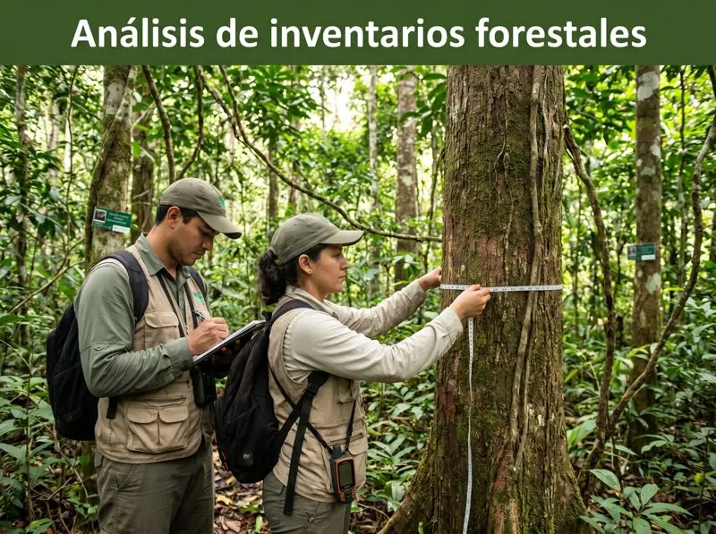
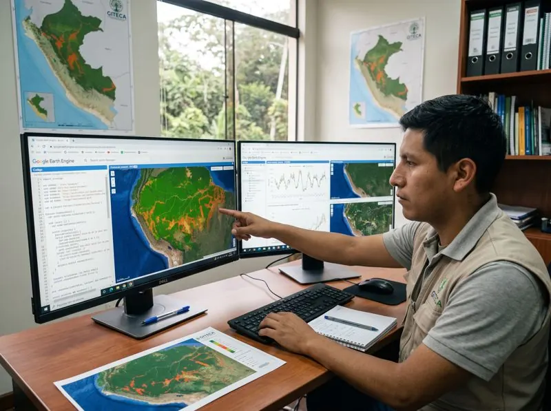
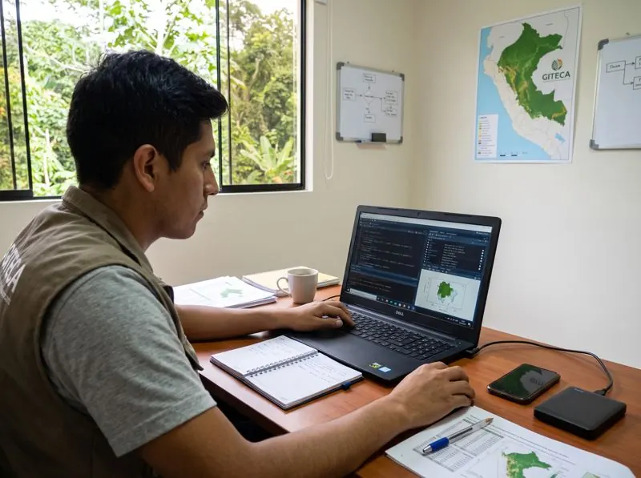

Qué hacemos por tu título, tu plan de manejo o tu institución
Cuatro líneas de trabajo con encargos concretos, entregables definidos y plazo. Sin precios de lista: te respondemos con una cotización en 24 horas.

Estudios y diagnósticos con satélite
Cambio de cobertura, deforestación y alertas dentro de tu título habilitante, con imágenes Landsat, Sentinel-2 y Planet NICFI.
Estudio multitemporal de cobertura histórica
Para: Titulares de concesiones y títulos habilitantes, empresas y comunidades
- Mapas de cobertura por periodo (p. ej. 2005, 2012, 2018 y 2025) y mapa de pérdida acumulada
- Cronología fechada del ingreso de ocupación y deforestación
- Informe técnico firmado por ingeniero colegiado (CIP), útil como sustento técnico en denuncias y procesos administrativos
- Archivos SIG (SHP y GeoTIFF) y metadatos de cada imagen
Caso 2026: concesión forestal maderable en la Amazonía peruana, cuatro periodos (2005–2025) con imágenes Landsat, Sentinel-2 y Planet NICFI.
Diagnóstico de deforestación del título habilitante
Para: Titulares, regentes e instituciones
- Pérdida de bosque anual dentro del título (2017–2026)
- Alertas tempranas recientes
- Mapa y resumen de hectáreas afectadas

Planes de manejo e inventarios
Mapas según los lineamientos técnicos, control de calidad de los datos de campo y cálculos dasométricos listos para el plan.
Scripts para elaborar mapas de planes de manejo
Para: Regentes forestales y consultores
- Script en R o QGIS que genera automáticamente el mapa base, de ubicación y de dispersión de especies a partir de tus datos
- Plantilla de leyenda, escala, norte y cuadros según los lineamientos técnicos
- Guía de uso para que lo ejecutes con tu propia información
- Tú elaboras y firmas tus mapas: entregamos la herramienta, no el mapa
Procesamiento de censo e inventario forestal
Para: Regentes forestales y titulares
- Control de calidad de datos de campo: especies, DAP, alturas y coordenadas
- Volumen por árbol, especie y parcela de corta
- Cuadros resumen listos para el plan de manejo
- Detección de errores antes de presentar

Tableros y automatización
Seguimiento de metas, fiscalización y reportes que se actualizan solos a partir de tus datos.
Tableros de control e informes automáticos
Para: Empresas, consultoras e instituciones
- Tableros en Power BI, Looker Studio o Shiny
- Informes Word/PDF que se actualizan con un clic
- Conexión a Excel, Google Sheets o bases de datos

Investigación y tesis
Acompañamiento por etapas para tesis forestales y ambientales, con análisis reproducible en R o QGIS.
Asesoría de tesis por etapas
Para: Estudiantes de forestal, ecología, biología, agronomía y geografía
- Proyecto de tesis: planteamiento y diseño metodológico
- Procesamiento: análisis estadístico y espacial en R o QGIS
- Resultados: mapas, cuadros y figuras
- Preparación de la sustentación
Capacidades técnicas del equipo
- SIG y control de calidad espacial · QGIS, ArcGIS, sf
- Teledetección y monitoreo · Google Earth Engine, Sentinel, Landsat
- Análisis de inventarios forestales · R, IVI, Chave 2014
- Tableros de control · Power BI, Shiny
- Automatización de procesos · R Markdown, Google Sheets, Excel
- Asesoría de tesis e investigación · Estadística, Bibliometría
Los informes son documentos técnicos elaborados con imágenes satelitales de acceso público; no constituyen peritaje judicial ni reemplazan la información oficial de la autoridad forestal. La información de cada cliente es confidencial.